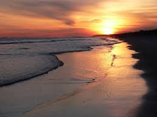

Vacation- my favorite places that I have visited
- Cancun, Mexico- went for spring break last year and it was very warm and fun
- Denver, Colorado- went in 2018 and the Rocky Mountains were very cool
- Hilton Head, South Carolina- went 2 years ago and the beach was very nice
- Disney World, Florida- I've been many times and it's always very fun
- Nashville, Tennessee- went in 2019 and the views were pretty and the activities my family did were fun
| Cancun | Denver | Hilton Head | Disney World | Nashville |
|---|---|---|---|---|
 |
 |  |
Career Choices- jobs I want to be my future career
- Pediatric Nurse- I love kids and I want to do something in the medical field.
- Physical Therapist- I think I would enjoy helping people heal injuries.
- Hair Stylist- I love doing hair and a part of me really wants to be a hair sytlis.
- Labor and Delivery Nurse- My sister has this job and she talks about it a lot and it seems fun and exciting.
- Cheer Coach- I have been cheering since I was 4 and it's a huge part of my life. I would love to be a cheer coach on the side of my actualy career.
| Pediatric Nurse | Physical Therapist | Hair Stylist | Labor and Delivery Nurse | Cheer Coach |
|---|---|---|---|---|
 |
 |
Favorite Recipes- My favorite foods to eat
- Mac and Cheese- I love all pasta and this is my favorite one.
- Pizza- My favorite pizza is pepperoni and bacon.
- Raspberry Cheesecake- This is my favorite dessert.
- Swedish Meatballs- My dad makes these and they are very good with mashed potatoes.
- Tacos- I love Mexican food.
| Mac and Cheese | Pizza | Raspberry Cheesecake | Swedish Meatballs | Tacos |
|---|---|---|---|---|
 |